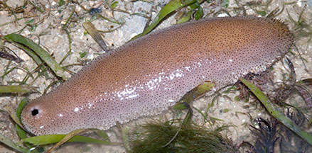
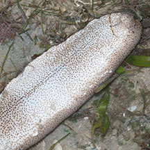
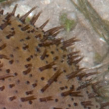
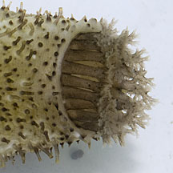
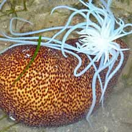
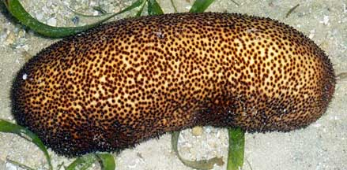
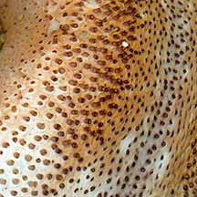
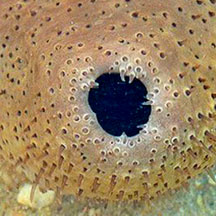
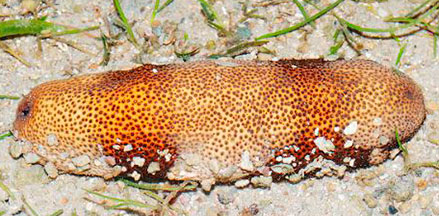
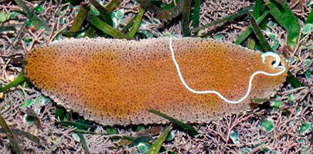

|
|
| sea cucumbers text index | photo index |
| Phylum Echinodermata > Class Holothuroidea |
| Brown
sea cucumber Bohadschia vitiensis* Family Holothuriidae updated Feb 2020 Where seen? This sea cucumber is sometimes seen among seagrasses. Most regularly on Cyrene Reef, but also on Pulau Semakau. Elsewhere, it is found in shallow sheltered lagoons on sand and sometimes among rubble and coral patches. It is said to remain buried in sand during the day and only emerges at dusk. It can crawl quite rapidly over the surface, for a sea cucumber. Some consider Bohadschia similis and Bohadschia vitiensis to be the same. Features: 15-30cm long. Body oval, uniformly coloured with distinct upper and underside. Colours variable: may be orange, yellow, brown, pink. Underside flat, pale. Tube feet tiny dark with pointed tips, emerging from dark spots evenly scattered all over the body including underside. Underside flat pale. Mouth facing downwards with 20 short feeding tentacles, yellowish with bushy tips. When disturbed, it readily releases from its backside, large sticky white cylindrical tubes called Cuvierian tubules. Babie cucumbers: It is recorded to reproduce annually in various parts of the world. Juveniles appear similar to small adults. Human uses: It is sometimes harvested together with other edible sea cucumbers, by hand collecting and free diving, sometimes using lead bombs. But the Cuvierian tubules make them 'disagreeable' and they do not have a high commercial value. It is considered a delicacy by Asians. It is also an important protein component in traditional diets of island communities or eaten in times of hardship. |
 Cyrene Reef, May 08 |
 Underside flat, pale. Cyrene Reef, May 08. |
|
 Tube feet short with pointed tips. Cyrene Reef, May 08 |
 Feeding tentacles with bushy tips. Cyrene Reef, Jul 12 . |
 When disturbed, releases Cuvierian tubules. Cyrene Reef, Dec 09 Photo shared by Loh Kok Sheng on his flickr. |
 |
*Species are difficult to positively identify without close examination.
On this website, they are grouped by external features for convenience of display.
| Brown sea cucumbers on Singapore shores |
On wildsingapore
flickr
|
| Other sightings on Singapore shores |
 Cyrene Reef, Jul 10 Photo shared by Loh Kok Sheng on his flickr. |
||
 Cyrene Reef, Dec 09  |
||
 Cyrene Reef, Jul 14 |
||
 Cyrene Reef, Aug 15 Photo shared by Loh Kok Sheng on flickr. |
|
|
Links
References
|